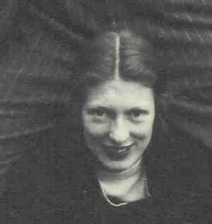

|
|
| 
Polly Frances Stuart SMITH (1909-1943) |
Polly Frances Stuart SMITH 3403
Cause of her death was heart attack.3404 General Notes: Known as "Polly." She and BIll had started the process of adopting a boy born in May 1943, whom she brought out with her to Livermore, California to be with Bill. The adoption procedures were barely begun. Polly had known someone who was having a baby. She died suddenly of a heart attack. In a death notice in a Cooperstown paper, the boy was identified as William D. Coddington, Jr. 237 Noted events in her life were: • Education, 1932, Rollins College, Winter Park, Orange Co., Florida. • Death Notice, 17 Dec 1942, Cooperstown, Otsego Co., New York. 3404 Polly married William Draper CODDINGTON, son of Dave Hennen CODDINGTON and Violet CUSHMAN, on 1 Jun 1935 in Bethlehem, Northampton Co., Pennsylvania 234.,235 (William Draper CODDINGTON was born on 29 Aug 1910 in New York, New York Co., New York 235,238,239, christened on 25 Nov 1910 in New York, New York Co., New York,240 died on 8 Feb 1976 in Verbank, Dutchess Co., New York 237 and was buried in Reynolds Cmty, Cross River, Westchester Co., New York.). The cause of his death was car accident.3404 |
|
only search Stockdale Coddington Genealogy |
Table of Contents | Surnames | Name List
This website was created 9 Apr 2025 with Legacy 10.0, a division of MyHeritage.com; content copyrighted and maintained by coddgenealogy at gmail d0t com